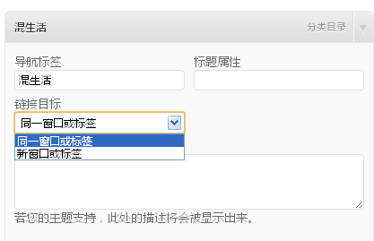

导航菜单图文使用教程
条评论前言
WordPress已经功能已经很强大，整体很棒，网上找了知更鸟的HotNewspro主题，very nice，也到知更鸟的站去逛了逛，发现WordPress自带修改导航的接口。以前都是到处找相关文章，又是装插件又是改模板的，一个字，累！
本来是直接贴知更鸟的那篇教程的，但提示请将图片上传到自己的空间，干脆，自己写吧，也刚好加点自己的体会。废话不多说，开始正题。
设置方法
首先点击外观>菜单项可以弹出如图显示，如果没有创建过菜单的话，在右边输入你要创建的菜单名，点创建菜单就可以了。

创建菜单后，可以将链接或者你创建的分类添加到菜单，默认添加都是一级菜单，如果要添加二级甚至是三级菜单，只需要在右边菜单里用鼠标往右拖动，每一级程序都会自动吸附，很直观，也没什么难的。
新手提醒
这里有必要提醒下：
创建菜单后需要在"主题位置"处，也就是图中标注的左边，在菜单俩大字的下边，选择导航自定义菜单和页脚自定义菜单，然后点"保存，打开你的首页就应该看到效果了。
设置链接打开方式
创建了菜单后问题随之而来，比如我添加了个链接到菜单里，本意是点击后在新标签打开，这样可以留住访问本站的页面，没见哪个地方有设置是不是？
以前用过一个插件，文章中出现链接都以新标签打开，俺知道target="_blank"可以实现，可这里怎么搞？想要设置菜单的属性，比如点击后是新标签或者新窗口打开还是当前窗口打开，这个在哪设置？

少入口选项的问题google好半天，要么就是一些根本看不懂的修改代码的方法，要么看别人的教程都是有直接设置接口的，但我发现我这只有两个标签，少了三个是不是？
后台右上角有个"显示选项"(对，就是屏幕的右上角，跟帮助挨一块的)，点击进去你就发现默认是没有把其他三个标签选上的，那里可以选择你希望显示的一些东西，但一般勾选上主题，分类，链接，链接目标和描述就好了。
至此，自己要的导航菜单就大功告成了!
后记
PS:我这个小小的问题麻烦了搞了好几次，在这多谢大神不厌其烦地一次次给我回复。希望我这篇短文能给与我有同样困惑的新手们一点帮助。知更鸟的这个主题真的不错，基本上不需要什么插件了，对咱这样的新手可玩性也是蛮高的。
后台无法登陆问题
在博客设置的时候还遇到了一个问题，就是登陆后那个登陆框还在，而且点击登陆按钮后链接是诸如:
http://sobaigu.com/wp-login。php？redirect_to=http://sobaigu.com/Linux-device
这样的地址，而且你回到前台发现怎么登陆那个登陆框都还在，点篇文章进去你是登陆状态的，这个问题搞得我把WordPress重装过，主题换过，也顺应民意，WordPress程序换成中文版，数据库都重装过(新站随便折腾，不心疼。
最后发现原来是自己在常规选项里设置了WordPress地址和站点地址不一致导致，登陆地址改成http://sobaigu.com/wp-login.php?，然后登陆进去改成一样的就可以了。
打算改进方向
同时有时间有能力的可以改进下：
第一，把登陆那玩意隐藏起来或者挪到页脚或导航上部，不一定要当前这种漂亮的登陆框，给个链接提示就好，隐藏这事俺可以搞定，可是登陆后那个时间和状态提示目前还搞不定，希望有人能改改，取消提示或者提示挪到导航上方那行，我看也刚好合适，腾出的这个整行也就是显示logo的这行可以换成960x55的广告位，或者可以隐藏收起。
第二，侧边的那个google自定义搜索替换到页眉导航上的那个搜索就好了;
本文标题：导航菜单图文使用教程
文章作者：凹凸曼
发布时间：2012-11-16
最后更新：2017-11-30
原始链接：https://sobaigu.com/wordpress-navi-menu.html
版权声明：转载请务必保留本文链接和注明内容来源，并自负版权等法律责任。